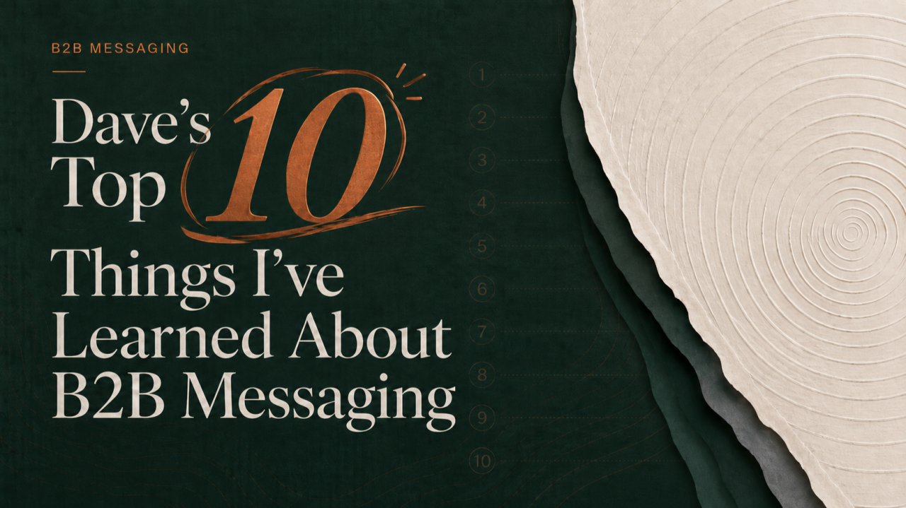

Jul 2026 · 6 min read
10 Things I’ve Learned About B2B Messaging
As AI helps us churn out miles and miles of forgettable copy, a few guide rails for what ‘good’ looks like feel especially welcome. A couple of decades of B2B marketing taught me a handful of rules I keep in mind when crafting messaging. A lot of it gets intuitive over time, so it was a good exercise to slow down and pin down my own top ten.
Read on LinkedIn →